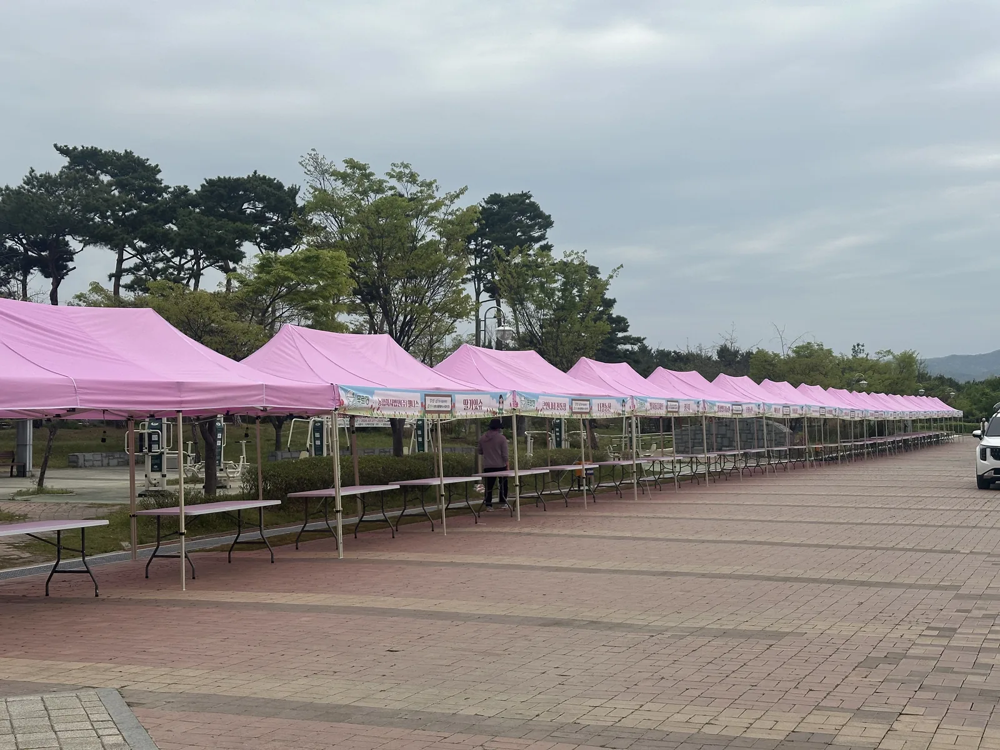
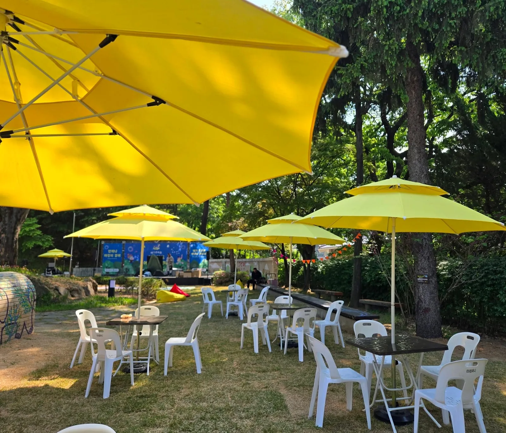

플리마켓은 "예쁜 사진이 곧 홍보"인 행사입니다. 흰 천막 20동을 세우면 깔끔하지만, 핑크나 노랑처럼 색이 있는 천막을 쓰면 SNS에 올라가는 사진이 달라집니다. 단양 야외 플리마켓 현장에서 색 천막을 어떻게 배치했는지 적습니다.

색 천막은 한 줄로, 같은 색으로
색 천막을 섞어 놓으면 오히려 어수선합니다. 단양 현장은 산책로를 따라 핑크 캐노피를 한 줄로 세워 멀리서 보면 하나의 띠처럼 보이게 했습니다. 부스 사이 간격은 50cm를 띄워 옆 부스 손님과 부딪히지 않게 하고, 셀러가 뒤로 드나들 공간 1m를 남깁니다.

셀러 테이블 수량: 부스당 1.5개
플리마켓 셀러는 진열 테이블 하나로 부족한 경우가 많습니다. 부스당 접이식 테이블 1개를 기본으로 두고 전체의 절반 수량을 예비로 가져가면 현장에서 추가 요청을 바로 받을 수 있습니다. 의자는 부스당 2개.
- 부스 20개 → 테이블 30개, 의자 40개
- 테이블보는 천막 색과 맞추거나 흰색으로 통일
- 운영본부 몽골텐트 1동 — 방송 · 안내 · 분실물
휴게 공간은 파라솔로 가볍게
천막 대신 대형 파라솔 + 흰 플라스틱 의자로 휴게 공간을 만들면 설치가 10분이면 끝나고 사진도 잘 나옵니다. 먹거리 부스 근처에 파라솔 4~6개, 의자 20~30개가 기준입니다.
보도블록 · 잔디 설치와 철거
산책로 보도블록에는 팩을 박을 수 없어 물통 웨이트로 고정합니다. 단양은 강바람이 있어 천막 한 동당 웨이트를 4개 → 6개로 늘립니다. 오전 6시 설치 시작, 오후 6시 마감 뒤 1시간 철거가 보통입니다.
자주 묻는 질문
Q핑크 말고 다른 색 천막도 있나요?
흰색 · 파란색 · 핑크 등 몇 가지 색을 갖추고 있습니다. 행사 컨셉 색을 알려 주시면 맞는 색으로 제안해 드립니다.
Q단양 · 제천은 청주에서 멀지 않나요?
청주 옥산에서 1시간 30분 안팎입니다. 새벽 설치 기준으로 일정을 잡으니 부담 없이 문의해 주세요.
Q셀러가 당일에 테이블을 더 달라고 하면요?
예비 수량을 가져가기 때문에 현장에서 바로 추가해 드립니다. 예비분은 사용한 만큼만 정산합니다.